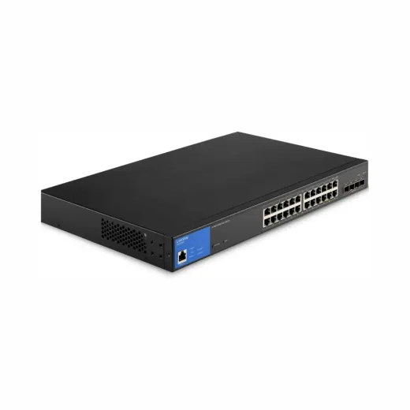
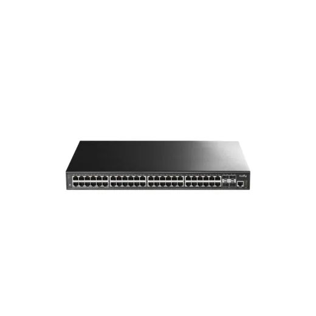
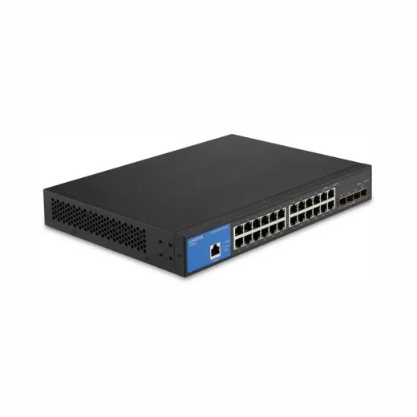
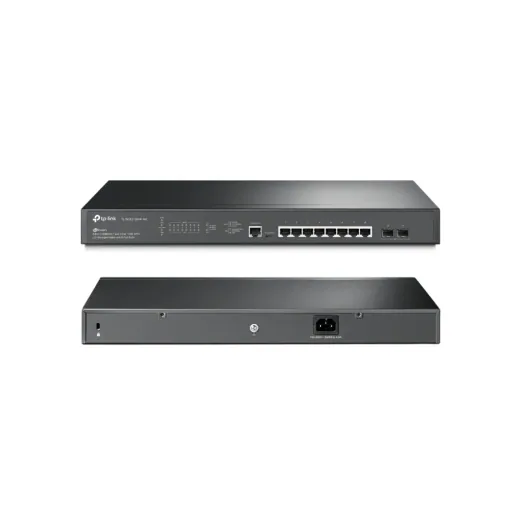
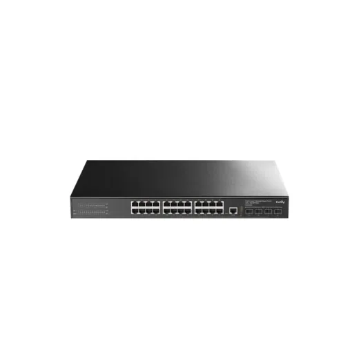
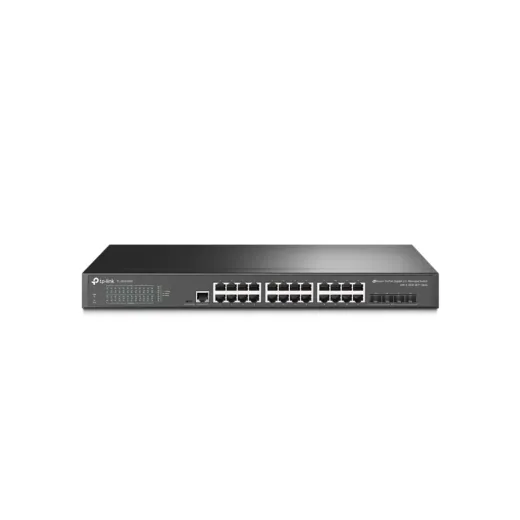

Inicio › Otros de tecnología y hogar

Puertos · Modelo LGS328MPC
Switch de 24 Puertos Linksys LGS328MPC Gigabit PoE+ 410w 4 SFPSFP+ 10 Gbps Rackeable
L 18,400
En Sycom
Precio en cada tienda
| Tienda | Precio | Antes | Disponibilidad | |
|---|---|---|---|---|
| Sycom | L 18,400 | — | Disponible | Ver en tienda › |
Precios referenciales tomados de cada tienda el 14 de noviembre de 2026. El precio válido es el que muestra la tienda al comprar.
Otros otros de tecnología y hogar Puertos

Switch de 48 Puertos L3 Cudy GS5048S4 100/1000 Gigabit + 4 Gigabit SFP Ports + 1Console RJ45L 13,800En Sycom
Switch de 24 Puertos Linksys LGS328C Gigabit Rackeable SFPL 13,500En Sycom
Switch de 8 Puertos 2.5G L2+ Administrable con 8 puertos 2.5GBASE-T PoE+ (240w)y 2 puertos 10GE SFP+ TPLINK OMADA SG3210XHP-M2 RackeableL 11,500En Sycom
Switch de 24 Puertos L3 Cudy GS5024S4 100/1000 Gigabit + 4 Gigabit SFP Ports + 1Console Port 1U Rack MountL 8,200.01En Sycom
Switch de 24 Puertos Gigabit L2+ Administrable con 4 10GE SFP+ Slots TPLINK OMADA TL-SG3428X RackeableL 7,500En Sycom Switch de 24 Puertos Linksys LGS124P Gigabit POE 120W RackeableL 6,495En Sycom
Switch de 24 Puertos Linksys LGS124P Gigabit POE 120W RackeableL 6,495En Sycom Switch de 18 Puertos Gigabit Smart con 16 Puertos POE+ 2SFP Max 250W +SFP SLOT TPLINK TL-SG1218MPEL 6,200En Sycom
Switch de 18 Puertos Gigabit Smart con 16 Puertos POE+ 2SFP Max 250W +SFP SLOT TPLINK TL-SG1218MPEL 6,200En Sycom Switch de 16 Puertos Gigabit POE + 2 SFP TPLINK OMADA JetStream TL-SG2218P Rackeable POE 150WL 5,895En Sycom
Switch de 16 Puertos Gigabit POE + 2 SFP TPLINK OMADA JetStream TL-SG2218P Rackeable POE 150WL 5,895En Sycom